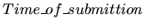
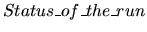
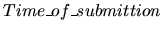
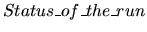

You are the Head Judge of the ACM Eastern European Regional Programming
Contest. The master Judge computer has been infected by computer virus which
has formated the hard disk.
The first line of the input indicates the number of test cases, and it's followed by a blank line.
For each dataset you have only the listing of submitted problems
log formatted as follows:
 (
25)
(A..G)
(h:mm)
(Y/N)
(
25)
(A..G)
(h:mm)
(Y/N)
There's a blank line between datasets.
Write a program to compute the final standing for each dataset by using the following rules:
- Teams are ranked according to the most problems solved.
- Teams who have solved the same number of problems are ranked by least total time.
- The total time is the sum of the time consumed for each problem solved.
- The time consumed for a solved problem is the time elapsed from the beginning
of the contest to the submital of the accepted run plus 20 minutes for each
previously rejected run. Further
submisions will be ignored.
- There is no time consumed for a problem that is not solved.
- Teams with equal score are assigned equal rank sorted by team number.
Print a blank line between datasets.
1
1 A 0:50 N
3 A 1:12 Y
2 B 1:19 N
1 A 1:20 Y
2 B 1:35 N
1 B 1:36 N
3 B 1:40 Y
3 C 1:41 N
4 A 1:40 Y
RANK TEAM PRO/SOLVED TIME
1 3 2 172
2 1 1 100
2 4 1 100
4 2
Miguel Revilla
2001-01-05